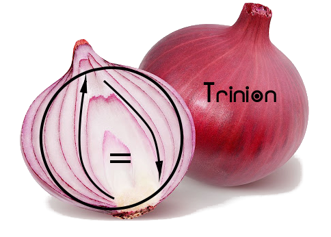

The Trinion (\(\Trinion\)) of Unïnfo
“Trinion” is pronounced “tree-nion” /ˈtrɪnjən/.
“The Way generates the One; the One generates the Two; the Two generates the Three; the Three generates all things.”
「道生一，一生二，二生三，三生萬物。」
In Unïnfo, every concrete thing, i.e. being, is made of three components described in the following three postulates[7]:
○ = ↑
- Postulate of Existence: There exists a Circle (○).
- Postulate of Differentiation: The Circle transforms into different forms. This transformation is called the Arrow (↑) which is itself different from the Circle.
- Postulate of Unification: The Circle and the Arrow are two aspects of the same being called Trinion (\(\Trinion\))[1]. This equivalence is called the Equal (=)[4]. And when the two former components (○, ↑) meet each other, they recognize each other. That recognition is denoted by the equation ⟪○ = ↑⟫[6].
The equation ⟪○ = ↑⟫ is the One that unifies the Two opposites (○, ↑) via the Third (=). This is called the unity of opposites (☯). Hence, the Unïnfo seems to be trialistic (due to the Three components), dualistic (due to the Two opposites), monistic (due to the One equation), but actually it's relativistic as reflected by the intrinsics of the Zero (the Trinion).[1] Corresponding to Circle, Arrow and Equal, there are three intrinsics[5] of the static, the dynamic and the balance, respectively, like the following:

- Intrinsic Static
- “Every arrow is composed of circles (⇴).”
 Just like a vehicle moving with its wheels, every change has its invariant(s), every motion has its law(s). The law of motion is invariant, the wheels of moving vehicle are invariant. Because they are invariants underlying the variants, they are called “intrinsic statics”.
Just like a vehicle moving with its wheels, every change has its invariant(s), every motion has its law(s). The law of motion is invariant, the wheels of moving vehicle are invariant. Because they are invariants underlying the variants, they are called “intrinsic statics”.
- “Every equal is in the shape of circle (⊜).”
 The most familiar equality is that two objects having the same information: shape, appearance, measure, value, structure, class, type, image, extension, etc. The symmetry of equality, i.e. ⟪A = B⟫ ⇔ ⟪B = A⟫, shows a loop from A to B then back to A. Thus its shape is a circle.
The most familiar equality is that two objects having the same information: shape, appearance, measure, value, structure, class, type, image, extension, etc. The symmetry of equality, i.e. ⟪A = B⟫ ⇔ ⟪B = A⟫, shows a loop from A to B then back to A. Thus its shape is a circle.
 The more subtle equality is that of the opposites, just like |-1234| = |+1234|. The opposites are “equal” because they are complement, together they comprise a whole which is represented by the Circle.
The more subtle equality is that of the opposites, just like |-1234| = |+1234|. The opposites are “equal” because they are complement, together they comprise a whole which is represented by the Circle.
- Intrinsic Dynamic
- “Every circle is composed of arrows (⥁).”
 Just like a spinning top, some object looks static because it's moving in circle, its motion is looping back, it's going back and forth (🗘).
Just like a spinning top, some object looks static because it's moving in circle, its motion is looping back, it's going back and forth (🗘).
- “Every equal is in the shape of arrows (⇌).” The balance between things is always a dynamic equilibrium where the exchange between them cancel out each other. For example, in mechanics, we have balance between force vectors, in chemistry, we have balance between reaction directions, etc.
- Intrinsic Balance
- The macro balance of the whole (⊜):
 For each “this” there always exists a “that” to counterbalance. If we cannot find the counterbalance, it's hidden in the meta world, e.g., when something is placed in an imbalanced position, there emerges a returning force as a meta to counterbalance. The parts can be imbalanced but the whole is always balanced. Another expression of the holistic balance is the cyclic order, e.g., a < b < c < a ⟹ a ~ b ~ c. However, to a selful eye, the wholistic balance can be difficult to see because the whole contains not only the visible but also the invisible, not only the objects but also the metas. So, to see the whole's balance, we must use a holistic eye.
For each “this” there always exists a “that” to counterbalance. If we cannot find the counterbalance, it's hidden in the meta world, e.g., when something is placed in an imbalanced position, there emerges a returning force as a meta to counterbalance. The parts can be imbalanced but the whole is always balanced. Another expression of the holistic balance is the cyclic order, e.g., a < b < c < a ⟹ a ~ b ~ c. However, to a selful eye, the wholistic balance can be difficult to see because the whole contains not only the visible but also the invisible, not only the objects but also the metas. So, to see the whole's balance, we must use a holistic eye.
- The micro balance of the selfless eye (⇌):
 In stead of extending the view to the whole, when we reduce the self to zero, just look at the contact point, the incidence point, we see the contacting parties always balance each other.
In stead of extending the view to the whole, when we reduce the self to zero, just look at the contact point, the incidence point, we see the contacting parties always balance each other.
That means the Existence of the Trinion is not an independent and absolute “pre-existence”, but a dynamic Existence in harmony with both Differentiation and Unification.
This property of the Trinion is called “vacantism” (Vietnamese “vô nguyên”, Chinese “無元”), which means “the absence of independent original essence”, and should not be confused with nihilism.[3] Moreover, the Trinion unifies the emptiness in the invisible world with the infinity in the visible world, thus sometimes is denoted with a circled infinity symbol “♾”. The vacantism is also expressed in Dao De Jing as the following:
“The Way is vacant, yet never used up.
Immeasurable abyss it is, as the ancestor of all things!”
「道沖而用之或不盈。
淵兮似萬物之宗。」
“The door and windows are cut out to form a room;
due to its vacancy, the room is usable.”
「鑿戶牖以為室，當其無，有室之用。」
Through Differentiation, the Trinion transforms into various forms of all beings in the Universe, extensionally. And intensionally, the Trinion is the Universe itself. Then through Unification, intensionally, every being is just the Trinion itself. This is the Grand Circle (◯) of Unïnfo:

As a cyclic order, the Grand Circle shows the vacantness of the Trinion that clears the illusion of a linear order from an absolute suppreme being to all things in the Universe. The Grand Circle has been traditionally symbolized by the Ouroboros, and its paradoxical impression is called “strange loop” recently by Douglas Hofstadter.

Apendix
A. Terminology
- Trinion:

“Trinion” = “Tri-” + “union” is the union of the three components. This puts more emphasis on the unity of the three, compared to other triads like the CIE. This meaning is very much similar to the “Holy Trinity” in theism, where “Trinity” may be considered as “Tri-” + “unity”. In the course of finding a term not to be confused with the “Holy Trinity”, the “Triad” or simply the “Three” have been considered. But then the term “Trinion” was coined to reflect the harmony of both the Differentiation and the Unification as the dynamic of the Existence which is not only a “pre-existence”. And the Trinion can also be considered as the composit of layers of components as shown by the onion, which itself has a Roman root meaning “one”.
Sidenotes:
- Searching for “trinion”, I've found two usages, “trinion” as a 3D complex number ⟪x + yi + zj⟫, and the “Trinion Wheel” in NeoDeism.
- The theme of triads in Unïnfo reflects the natural triadic relations in philosophies from the East to the West: Taoism's “yin-yang-qi”, Hinduism's Trimurti, Celtic culture's triplism, Christianity's Trinity, as well as triples of categories of being from Plotinus to Kant, Hegel and Peirce.
- Numbering: As nominals, ⟪○⟫, ⟪↑⟫ and ⟪=⟫ are numbered “0”, “1” and “2” (Chinese “二”), resp., which represent their intension. As ordinals, ⟪○⟫, ⟪↑⟫ and ⟪=⟫ are called “the First”, “the Second” and “the Third”, resp. As cardinals, ⟪\(\Trinion\)⟫, ⟪○ = ↑⟫, ⟪○, ↑⟫ and ⟪○, ↑, =⟫ are called “the Zero”, “the One”, “the Two” and “the Three”, resp. Moreover, the three components ⟪○⟫, ⟪↑⟫ and ⟪=⟫ are also identified with “1”, “2” and “0”, resp., when considering their extension. In Taoism, the Zero (\(\Trinion\)) is called “the Way”, the 1st and the 2nd (○, ↑) are called “yin”[陰,⚋] (dark, negative, disconnected, blocked) and “yang”[陽,⚊] (light, positive, connected, through) which are harmonized by the 3rd (=). The 3rd is the most important one with many manifestations: the Equal, the middle, the interaction, the interface, ...
“All things carry Yin on their back and embrace Yang in their front,
which are harmonised by the Breath of Vacancy in the Conflict .”
「萬物負陰而抱陽，沖氣以為和。」
The Arrow ⟪↑⟫ here is the long and curved arrow (↝) which can be broken into many short and straight arrows ⟪↥, ↧⟫ called “vectors” where the Equation turns out to be ⟪○ = ↥ + ↧⟫.
- Vacantism: The Sanskrit word “śūnyatā” and the Chinese characters “空”, “無” are usually translated to “emptiness” in English. But because such words e.g., “empty”, “void”, “nothing”, “zero”, “null”, “nil” have negative meaning, it's usually confused with nihilism which is denied by both Buddhism and Taoism:
“Non-action but nothing is not done!”
「無為而無不為。」
Thus, the term “vacantism” is used here to emphasise the usefulness of the vacancy, just like a “vacant room” in the hotel. Instead of “empty” which means “there's nothing”, “vacant” is used to mean “there's space to be filled in”. Even if it's occupied, the occupation is temporary and the occupation itself generates more vacancy. And ultimately, “vacantism” means “the throne of the transcendent & pre-existing supreme being is vacant”, which is stated in the Buddhist sutta “The Root of all things”. Note that it does not deny the presence of the immanent supreme being, though.
Historically, the term “vacantism” was coined due to the lack of correspondent English term for the Vietnamese term “vô nguyên” (Chinese “無元”) in the chain “trialism” (vi. “tam nguyên”) → “dualism” (vi. “nhị nguyên”) → “monism” (vi. “nhất nguyên”) → “???-ism” (vi. “vô nguyên”) when discussing about ontological categories. Actually, at first “vô nguyên” was translated to “emptism” in the note “Mọi thứ đều có Ba, để Ba sinh ra mọi thứ”, but then “vacantism” was chosen when editing this document of Trinion.
- Equal: The name “Equal” of the third component is an adjective noun meaning “equality”, “equilibrium”, “equivalence”, “balance”. Its symbol “=” is called “equal sign” in American English or “equals sign” by Unicode Consortium in British English. Note that this is an obsolete meaning different from the meaning “equal parts” or “peers” used in everyday English.
- Intrinsics: Respectively corresponding with the three components Circle, Arrow and Equal, the three intrinsic properties static, dynamic and balance are so intrinsic that none of them can stand alone. Here we use the adjective “intrinsic” to emphasise the other underlying properties of a component over the apparent property of that component, e.g. the “Intrinsic Static” and the “Intrinsic Dynamic” versus the apparent “Balance” of the Equal. Historically, while the West (Europe) has a long tradition of philosophy based on the Static, i.e. “existence” via “form”, “category”, “essence”, “element”, the East (from Islamic world, India, to China) has a long tradition of philosophy based on the Dynamic, e.g. “anicca” (अनिच्च, en. “impermanence”), “saṅkhāra” (सङ्खार, en. “formation”), “xíng” (行, en. “phase of transformation”), “yi” (易, en. “change”). About the Balance, both the West and the East had focused on the moral balance, e.g. the inscription “Nothing in excess” in the temple of Apollo at Delphi, the “middle way” in Buddhism, the “Doctrine of the Mean” (中庸, Zhōngyōng) in Confucianism. Then in modern science, the role of Balance has been shown to be universal via equations.
-
 Equation: The equation “Circle Equals Arrow” is both, the equivalence principle of the macrocosm (Universe), written with the static Equal ⟪○ = ↑⟫, and the differential equation of the microcosm (Trinion), written with the dynamic Equal ⟪○ ⇌ ↑⟫.
Equation: The equation “Circle Equals Arrow” is both, the equivalence principle of the macrocosm (Universe), written with the static Equal ⟪○ = ↑⟫, and the differential equation of the microcosm (Trinion), written with the dynamic Equal ⟪○ ⇌ ↑⟫.
-
Postulate: “Postulates” and “axioms” are both basic assumptions of a theory and are used as the foundation and starting points to build that theory upon. However, while “axioms” are statements taken to be self-evident, accepted to be “true obviously” without question nor controversy, as reflected in the adjective “axiomatic” and in axiomatic systems of mathematics, “postulates” are statements derived from our real-world experiences, like the five postulates of Euclid (in contrast with Euclid's five axioms), and like the principles of physics. In particular, the three postulates of Unïnfo here are statements derived from the author's experience. Hence, these postulates are not meant to be the “ultimate truth”, and the correspondent components are not meant to be the most fundamental categories like in dualistic and plurualistic ontologies. These postulates are just proposed here to be the theory's starting points, which are open and will be revised again and again throughout the theory.